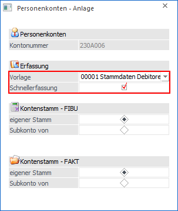
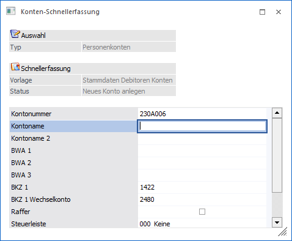
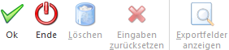

Über den Menüpunkt
1 WinLine FAKT
1 Stammdaten
1 Konten
1 Personenkonten
können mit Hilfe der "Konten-Schnellerfassung" auf einfache und schnelle Art neue Konten angelegt werden. Die Kontenanlage erfolgt hierbei in einem eigenen Fenster, in dem nur die Felder der gewählten Vorlage sichtbar sind.
Voraussetzung dafür ist, dass entsprechende Export-/Import-Vorlagen angelegt wurden. Aufgrund dieser Vorlagen kann bestimmt werden, welche Felder eingegeben werden müssen, welche überhaupt angezeigt werden und welche Felder bereits fix vorbelegt werden (z.B. BKZ=Bilanz-Kennzahlen). Nähere Informationen zum Thema Vorlagen entnehmen Sie bitte dem WinLine START-Handbuch.
Die Schnellerfassung selber öffnet sich automatisch, wenn man im Fenster Personenkonten - Anlage nach Auswahl einer Vorlage und Verwendung der Option "Schnellerfassung" den Button "Ok bzw. die Taste F5 drückt.

Hier stehen nur die in der Vorlage definierten Felder für die Eingabe zur Verfügung.

Buttons

Ø Ok
Durch Drücken der F5-Taste wird das Konto angelegt.
Ø Ende
Durch Drücken der ESC-Taste wird die Konten-Schnellerfassung ohne Speichern verlassen.
Ø Löschen
Der Button steht aktuelle nicht zur Verfügung.
Ø Eingaben zurücksetzen
Der Button steht aktuelle nicht zur Verfügung.
Ø Exportfelder anzeigen
Der Button steht aktuelle nicht zur Verfügung.